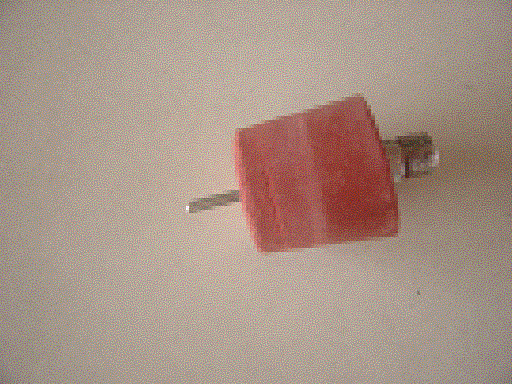

簡易式ペットボトルロケット
ゴム栓に、ボールの空気入れの挿入金具をつきさす。ペットボトルに少量の水を入れ、
三脚を発射台にする。ゴム栓でペットボトルの口をふさぎ、空気入れで空気を入れていくと、
自然に発射する。水の量を調節するのがミソだ。水がかかることがあるので、
暑い時期にお勧めだ。
本物のペットボトルロケットは、１００メートル近く飛ぶのでかなり広い場所でしなければならない。
簡易式だとよく飛んでも１５メートルぐらいなので、学校の運動場でしても危険ではない。


ゴム栓に空気入れの挿入金具をつきさす。
発射台は三脚。